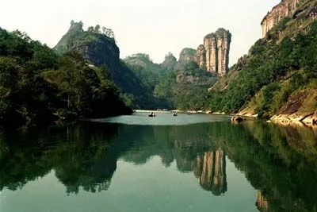
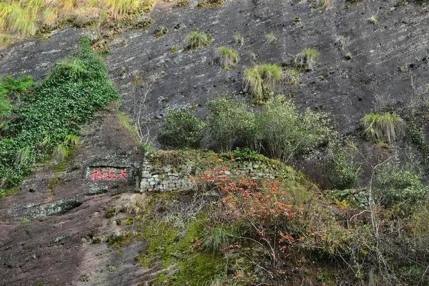
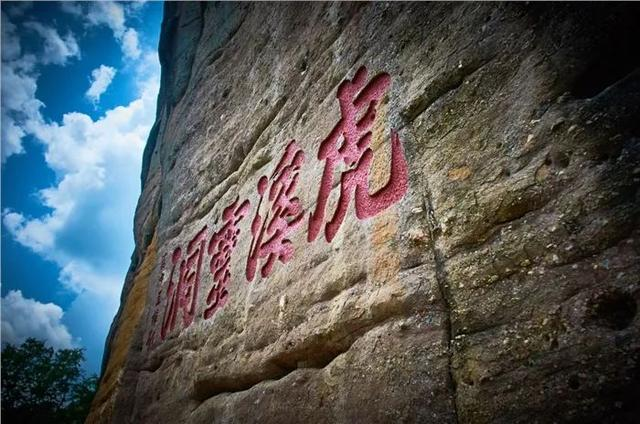
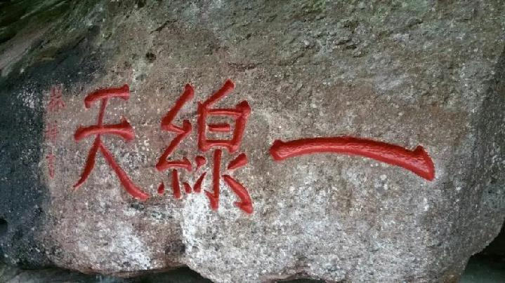

武夷山风景名胜区约70平方公里，属典型丹霞地貌。自然、人文完美结合，有机相融。奇峰、秀水、幽谷、险壑让您忘返，厚重的文化基奠与历史留存的轨迹使您驻足。主要景区有: 云窝--天游景区、一线天——虎啸岩景区、武夷宫景区、大红袍--水帘洞景区四大景区。
天游峰景区简介：登天游，纵览武夷群峰，俯瞰清莹九曲，气象万千的云海和动人心魄的佛光宛若蓬莱。

九龙窠大红袍景区简介：“溪边奇茗冠天下，武夷仙人自古栽”。六棵原生大红袍母树屹立在九龙窠逼仄的崖壁上，天地精英，自成仙风道骨。
水帘洞景区简介：高大的拱形丹崖，似一到飞檐横亘天际。两道飞泉由崖巅奔泻而下，如珠帘似薄雾，摇曳生辉。

虎啸岩景区简介：虎啸岩蟠踞在九溪曲南一线天北面，怪石崔嵬，流水迂回，四壁陡峭，屹然独耸，是一个独具泉石天趣的佳境，有“极目皆图画”的美称。

一线天景区简介：透过岩壁之间的罅隙仰望天空，广阔无边竟凝城光明一线，为追寻黑暗中的碧红，我们从未停下前进的脚步。
优待政策：持有军官证、记者证、残疾证以及全国医护工作者（包括港澳台）本人凭以上有效证件免费入园（不含竹筏漂流、体验性消费项目等费用）。补充说明：以上信息仅供参考，具体信息请以景区当天披露为准。
服务设施：
停车场：【武夷山南停车场】参考价格：15分钟内免费，¥10元/6小时内，¥30元/24小时内；地址：武夷山主景区南入口停车场；库位：100；以上仅供参考，具体以景区现场为准。；【武夷山北停车场】参考价格：免费；地址：武夷山主景区北入口停车场；库位：100；以上仅供参考，具体以景区现场为准。
WIFI：账号：武夷山景区免费WIFI；密码：无需密码；范围：覆盖景区南、北入口
行李寄存：景区南入口提供免费自助寄存服务，工作时间7:00-18:00，类似于超市寄存柜，拿小票作取物凭证。
园内交通：①观光车分为火车型观光车（往返南入口-玉女峰-天游峰线路）、中巴型观光车（往返景区南北入口、各景点、竹筏码头线路）；②与景区开放时间一致；③购买含观光车票种的游客可不限次数乘坐观光车。
卫生间：景区内设有多个卫生间，分布在检票口、各个景点，并且标有醒目的指示牌。
吸烟区：景区内设有指定的吸烟区，详情请询问工作人员。
餐厅：景区内有许多农家乐及餐厅，有明显标志标牌。可使用支付宝/微信支付。
自动售卖机：可支持多种支付方式，包括微信和支付宝。
便利店：景区南入口有数家便利店。